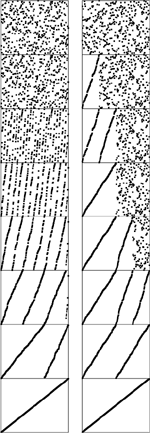

C++ Programming Robert Sedgewick - Princeton University Addison Wesley Professional Algorithms in C++, Parts 1–4: Fundamentals, Data Structure, Sorting, Searching, Third Edition
8.5. Bottom-Up Mergesort
As we discussed in Chapter 5, every recursive program has a non-recursive analog that, although equivalent, may perform computations in a different order. As prototypes of the divide-and-conquer algorithm-design philosophy, nonrecursive implementations of mergesort are worth studying in detail.
Consider the sequence of merges done by the recursive algorithm. In the example given in Figure 8.2, we saw that a file of size 15 is sorted by the following sequence of merges:
1-by-1 1-by-1 2-by-2 1-by-1 1-by-1 2-by-2 4-by-4
1-by-1 1-by-1 2-by-2 1-by-1 2-by-1 4-by-3 8-by-7.
This order of the merges is determined by the recursive structure of the algorithm. However, the subfiles are processed independently, and merges can be done in different sequences. Figure 8.4 shows the bottom-up strategy for the same example, where the sequence of merges is
1-by-1 1-by-1 1-by-1 1-by-1 1-by-1 1-by-1 1-by-1
2-by-2 2-by-2 2-by-2 2-by-1 4-by-4 4-by-3 8-by-7.
Each line shows the result of a call on merge during bottom-up mergesort. The 1-by-1 merges are done first: A and S are merged to give A S; then, O and R are merged to give O R; and so forth. Since the file size is odd, the last E is not involved in a merge. On the second pass, the 2-by-2 merges are done: We merge A S with O R to get A O R S, and so forth, finishing with a 2-by-1 merge. The sort is completed with a 4-by-4 merge, a 4-by-3 merge, and, finally, an 8-by-7 merge.
Program 8.5. Bottom-up mergesort|
Bottom-up mergesort consists of a sequence of passes over the whole file doing m-by-m merges, doubling m on each pass. The final subfile is of size m only if the file size is an even multiple of m, so the final merge is an m-by-x merge, for some x less than or equal to M.
inline int min(int A, int B)
{ return (A < B) ? A : B; }
template <class Item>
void mergesortBU(Item a[], int l, int r)
{
for (int m = 1; m <= r-l; m = m+m)
for (int i = l; i <= r-m; i += m+m)
merge(a, i, i+m-1, min(i+m+m-1, r));
}
|
In both cases, there are seven 1-by-1 merges, three 2-by-2 merges, a 2-by-1 merge, a 4-by-4 merge, a 4-by-3 merge, and an 8-by-7 merge, but the merges are done in different orders. The bottom-up strategy is to merge the smallest remaining files, passing from left to right through the array.
The sequence of merges done by the recursive algorithm is determined by the divide-and-conquer tree shown in Figure 8.3: We simply traverse the tree in postorder. As we saw in Chapter 3, a nonrecursive algorithm using an explicit stack can be developed that gives the same sequence of merges. But there is no need to restrict to postorder: Any tree traversal that traverses the subtrees of a node before it visits the node itself will give a proper algorithm. The only restriction is that files to be merged must have been sorted first. For mergesort, it is convenient to do all the 1-by-1 merges first, then all the 2-by-2 merges, then all the 4-by-4 merges, and so forth. This sequence corresponds to a level-order traversal, working up from the bottom of the recursion tree.
We saw in several examples in Chapter 5 that, when we are thinking in a bottom-up fashion, it is worthwhile to reorient our thinking towards a combine-and-conquer strategy, where we take solutions to small subproblems and combine them to get a solution to a larger problem. Specifically, we get the combine-and-conquer nonrecursive version of mergesort in Program 8.5 as follows: We view all the elements in a file as ordered sublists of size 1. Then, we scan through the list performing 1-by-1 merges to produce ordered sublists of size 2; then, we scan through the list performing 2-by-2 merges to produce ordered sublists of size 4; then, we do 4-by-4 merges to get ordered sublists of size 8; and so on, until the whole list is ordered. The final sublist will not always be the same size as all of the others unless the file size is a power of 2, but we can still merge it in.
If the file size is a power of 2, the set of merges done by bottom-up mergesort is precisely the same as that done by the recursive mergesort, but the sequence of merges is different. Bottom-up mergesort corresponds to a level-order traversal of the divide-and-conquer tree, from bottom to top. By contrast, we have referred to the recursive algorithm as top-down mergesort because the postorder traversal works from the top of the tree down.
If the file size is not a power of 2, the bottom-up algorithm does a different set of merges, as shown in Figure 8.5. The bottom-up algorithm corresponds to a combine-and-conquer tree (see Exercise 5.75), which is different from the divide-and-conquer tree related to the top-down algorithm. It is possible to arrange for the sequence of merges made by a recursive method to be the same as that for a nonrecursive method, but there is no particular reason to do so, because differences in cost are slight relative to total cost.
The merging patterns for bottom-up mergesort are completely different from those for top-down mergesort (Figure 8.3) when the file size is not a power of 2. For bottom-up mergesort, all file sizes except possibly the final one are a power of 2. These differences are of interest in understanding the basic structure of the algorithms, but have little influence on performance.
Properties 8.1 through 8.4 hold for bottom-up mergesort, and we have the following additional properties:
Property 8.5. All the merges in each pass of a bottom-up mergesort involve file sizes that are a power of 2, except possibly the final file size|
This fact is easy to prove by induction.
|
Property 8.6. The number of passes in a bottom-up mergesort of N elements is precisely the number of bits in the binary representation of N (ignoring leading 0 bits)
The operation of bottom-up mergesort on a larger file is illustrated in Figure 8.6. We can sort 1 million elements in 20 passes through the data, 1 billion elements in 30 passes through the data, and so forth.
We need to do only seven passes to sort a file of 200 elements using bottom-up mergesort. Each pass halves the number of sorted subfiles and doubles the subfiles' lengths (except possibly that of the final one).
In summary, bottom-up and top-down mergesort are two straightforward sorting algorithms that are based upon the operation of merging two ordered subfiles into a combined ordered output file. The algorithms are closely related and indeed perform the same set of merges when the file size is a power of 2, but they are certainly not identical. Figure 8.7 is an illustration of their differing dynamic performance characteristics on a large file. Either algorithm might be used for practical applications when space is not at premium and a guaranteed worst-case running time is desirable. Both algorithms are of interest as prototypes of the general divide-and-conquer and combine-and-conquer algorithm design paradigms.
Bottom-up mergesort (left) consists of a series of passes through the file that merge together sorted subfiles, until just one remains. Every element in the file, except possibly a few at the end, is involved in each pass. By contrast, top-down mergesort (right) sorts the first half of the file before proceeding to the second half (recursively), so the pattern of its progress is decidedly different.

Exercises | 8.24 Show the merges that bottom-up mergesort (Program 8.5) does for the keys E A S Y Q U E S T I O N. | | 8.25 Implement a bottom-up mergesort that starts by sorting blocks of M elements with insertion sort. Determine empirically the value of M for which your program runs fastest to sort random files of N elements, for N = 103, 104, 105, and 106. | | 8.26 Draw trees that summarize the merges that Program 8.5 performs, for N = 16, 24, 31, 32, 33, and 39. | | 8.27 Write a recursive mergesort that performs the same merges that bottom-up mergesort does. | | 8.28 Write a bottom-up mergesort that performs the same merges that top-down mergesort does. (This exercise is much more difficult than is Exercises 8.27.) | | 8.29 Suppose that the file size is a power of 2. Remove the recursion from top-down mergesort to get a nonrecursive mergesort that performs the same sequence of merges. | | 8.30 Prove that the number of passes taken by top-down mergesort is also the number of bits in the binary representation of N (see Property 8.6). |
|


 N
N lg N
lg N